Tools: Figma, Procreate
Yale students need affordable airport transportation, and ride-sharing is the most cost-effective solution. However, the current system - a public Facebook group - is deeply problematic. Posts get buried under spam, finding compatible schedules is tedious, and the overall experience is frustrating and unreliable.
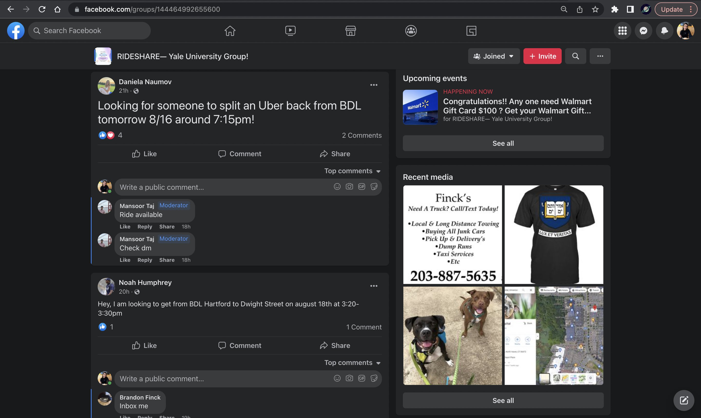
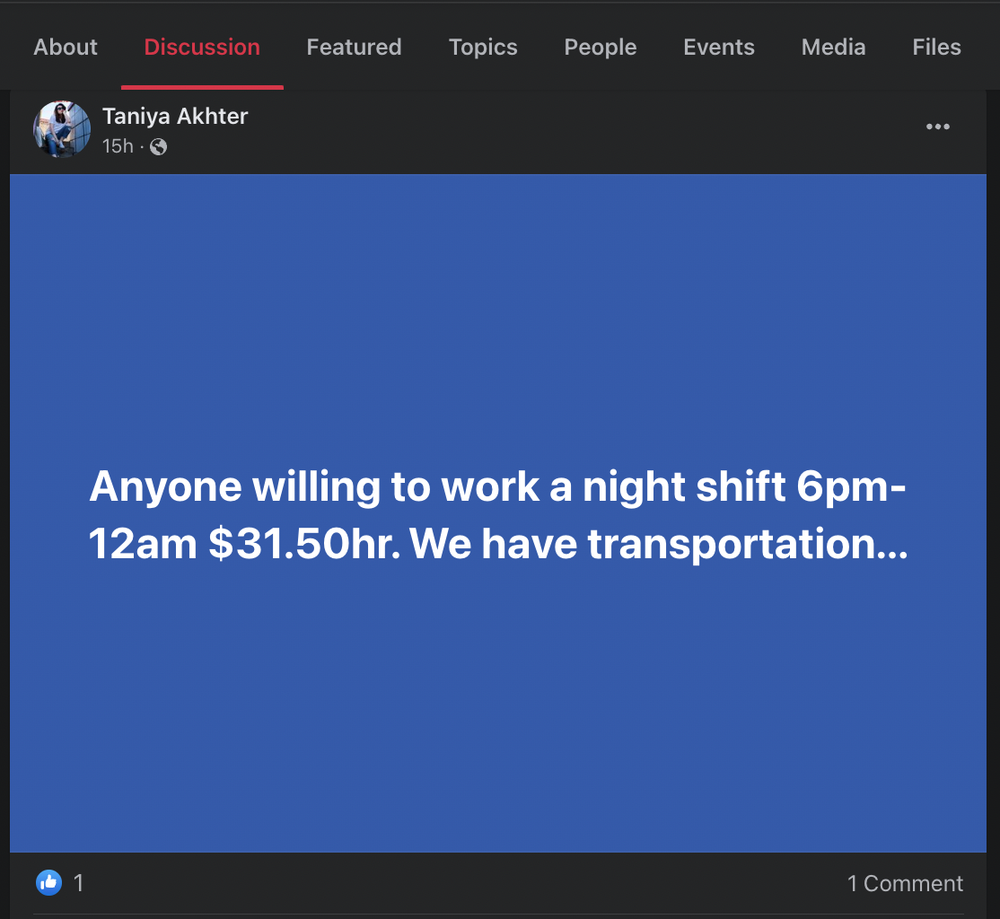
Previous solutions haven't quite hit the mark:
• Ride Buddies offers Yale-specific privacy but suffers from poor design and low user adoption
• Hopp has a better interface but lacks Yale-specific features, making actual ride matching difficult for students
This competitive analysis revealed the need for a solution that combines Yale-specific functionality with intuitive design.
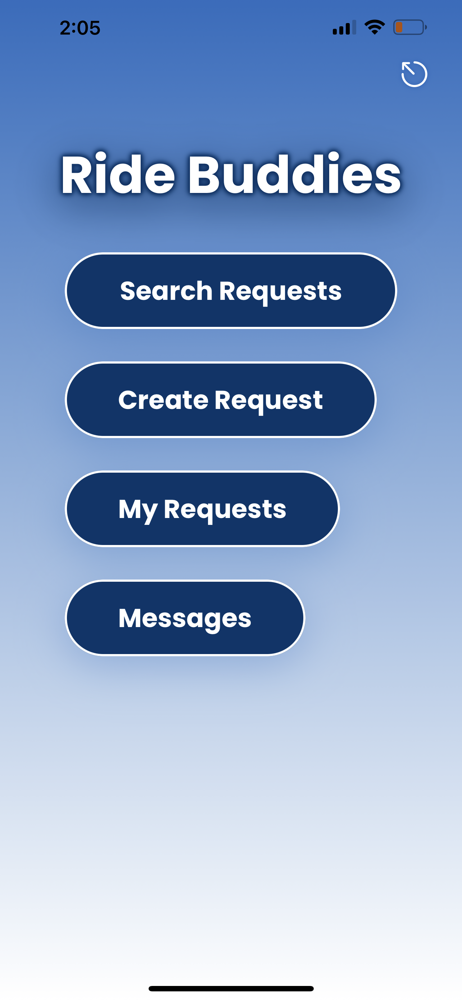
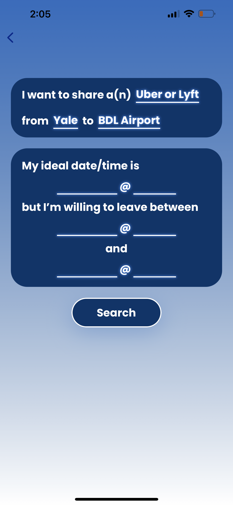
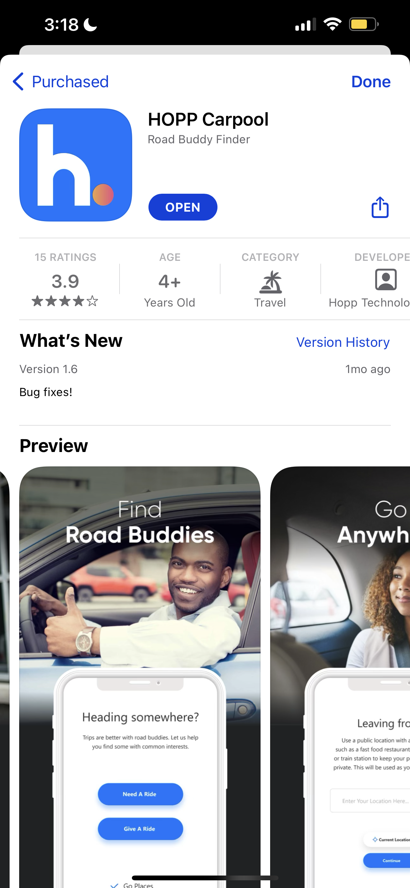
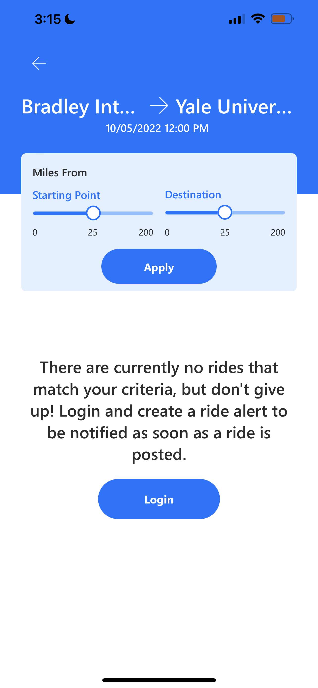
I designed Yale RideShare, an app that combines familiar interface patterns from various successful platforms:
• Booking mechanics inspired by Uber and Lyft
• Matching features similar to dating apps
• Clean, organized feed that improves upon the Facebook group experience
The app prioritizes both privacy and usability, creating a Yale-specific platform that makes ride coordination simple and secure.
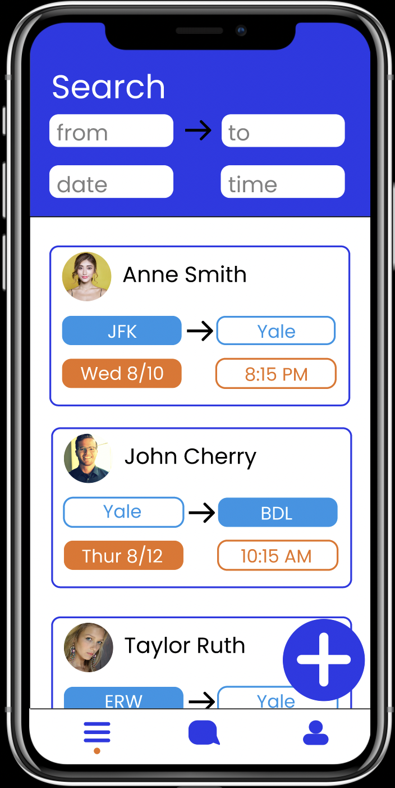
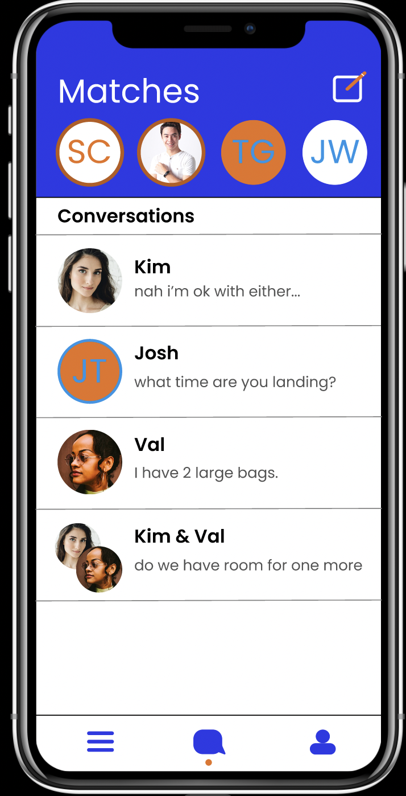
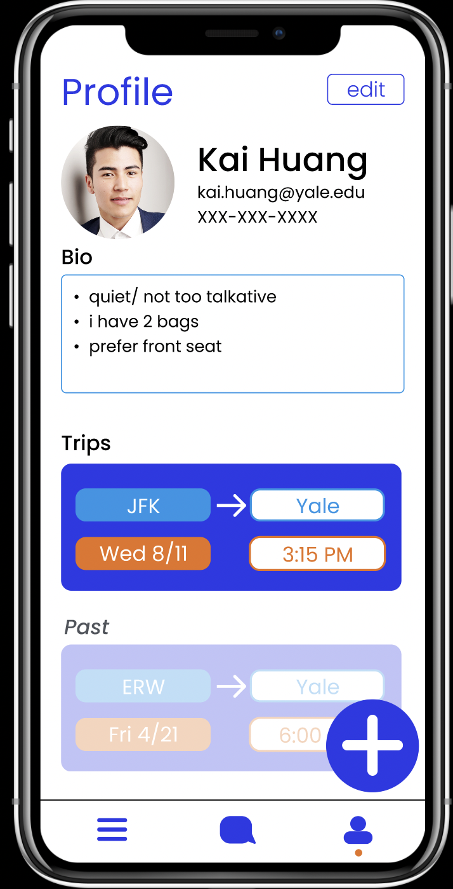
I began in Procreate, sketching initial concepts and user flows to explore different approaches to ride matching and scheduling. These early sketches helped me work through complex interaction patterns before moving to digital design.
Moving to Figma, I developed these ideas into a high-fidelity prototype that demonstrates the complete user experience, showing how students would post rides, match with others, and coordinate travel plans.
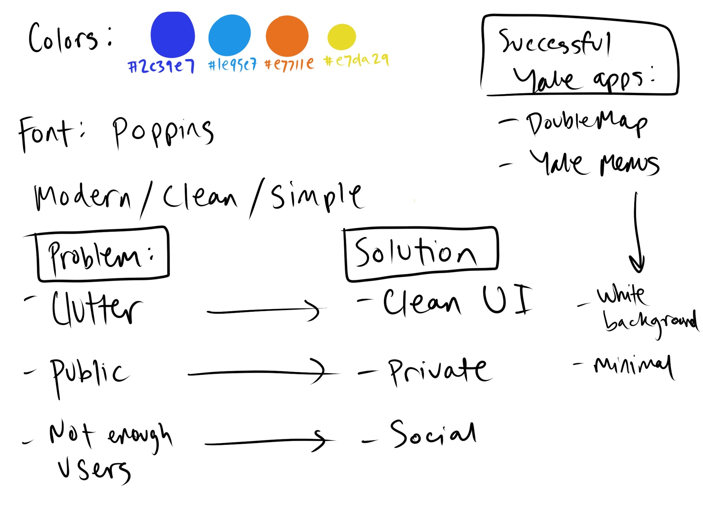
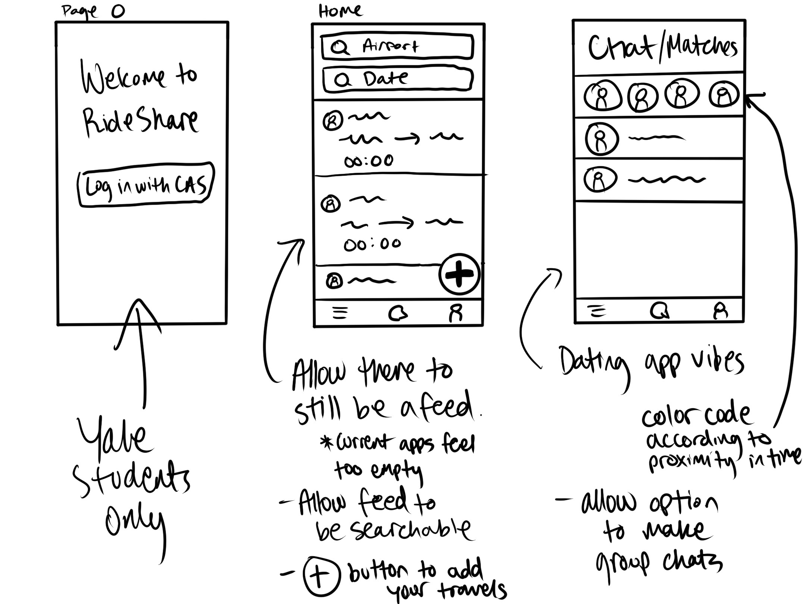
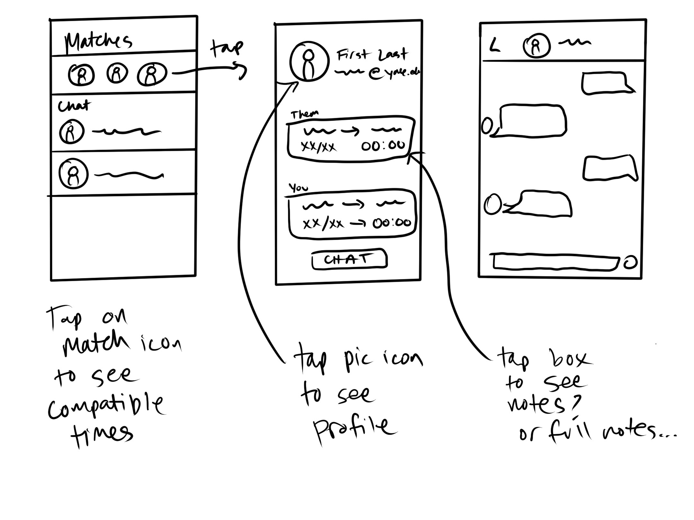
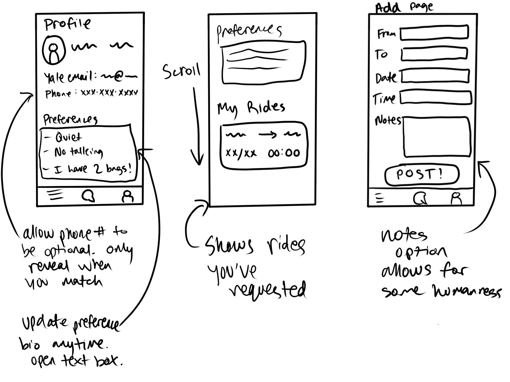
Impact: Created a comprehensive solution that addresses real student pain points through user-centered design. The prototype demonstrates a clear path from problem identification through competitive analysis to a polished, functional solution.
The final prototype showcases intuitive ride booking, smart matching algorithms, and a clean interface that students would actually want to use - solving the transportation coordination problem that affects hundreds of Yale students each semester.